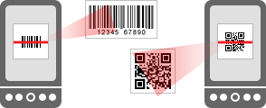

오픈 소스 ZXing 프로젝트의 공식 안드로이드 응용 프로그램 :
http://github.com/zxing/zxing
바코드 스캐너는 바코드를 읽어와 같은 가격과 리뷰 등의 제품 정보를 조회 할 휴대 전화의 카메라를 사용합니다.

그것은 또한 QR 코드와 데이터 매트릭스와 같은 2 차원 바코드를 읽습니다. 이러한 웹 사이트에 대한 링크를 포함 할 수 있습니다, 같은 전화 번호와 이메일 주소 등의 정보를 문의하십시오.
Google 번역에 의해 번역.